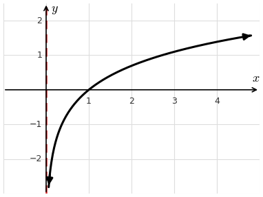
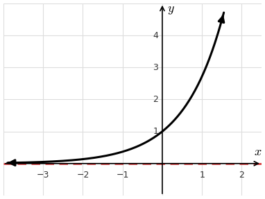
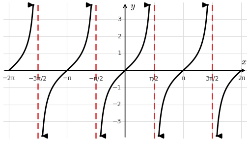
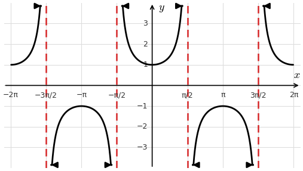
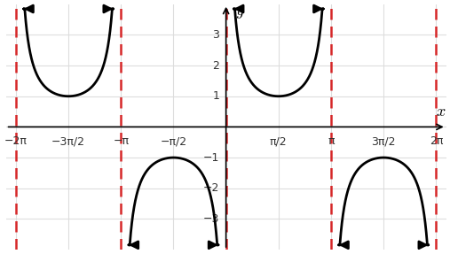
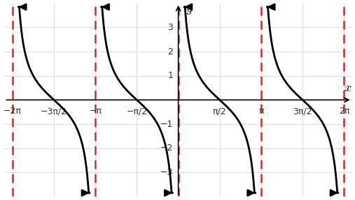
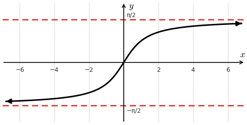
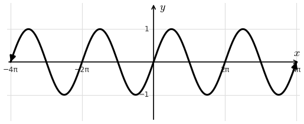

Lesson 6: Limits of Transcendental Functions
Knowing the graphs of these functions, and their asymptotes, lets us read off many important limits. The dashed lines are asymptotes.
The \(y\)-axis is a vertical asymptote of \(f(x) = \ln x\).

The \(x\)-axis is a horizontal asymptote of \(f(x) = e^x\).

Since \(\tan x = \frac{\sin x}{\cos x}\), the graph has vertical asymptotes where \(\cos x = 0\).

The one-sided limits are different, so \(\displaystyle\lim_{x \to \frac{\pi}{2}} \tan x\) does not exist. The same happens at \(x = \frac{3\pi}{2}\).
Since \(\sec x = \frac{1}{\cos x}\), the graph has vertical asymptotes where \(\cos x = 0\).

So \(\displaystyle\lim_{x \to \frac{\pi}{2}} \sec x\) and \(\displaystyle\lim_{x \to \frac{3\pi}{2}} \sec x\) do not exist.
Since \(\csc x = \frac{1}{\sin x}\), the graph has vertical asymptotes where \(\sin x = 0\).

So \(\displaystyle\lim_{x \to 0} \csc x\) and \(\displaystyle\lim_{x \to \pi} \csc x\) do not exist.
Since \(\cot x = \frac{\cos x}{\sin x}\), the graph has vertical asymptotes where \(\sin x = 0\).

So \(\displaystyle\lim_{x \to 0} \cot x\) and \(\displaystyle\lim_{x \to \pi} \cot x\) do not exist.
The graph of \(f(x) = \tan^{-1} x\), also written \(\arctan x\), has two horizontal asymptotes.


As \(x\) grows, \(\sin x\) keeps oscillating between \(-1\) and \(1\). It never settles on a single value, so the limits below do not exist.